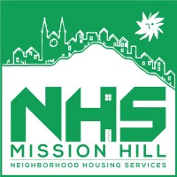

Mission Hill Neighborhood Housing Services, Inc. (MHNHS) is a community-based nonprofit dedicated to the revitalization and stabilization of Boston’s Mission Hill neighborhood. According to its mission statement, MHNHS is committed to “the development and maintenance of stable, decent, and affordable housing for low- and moderate-income people” and actively involves all segments of the community in planning housing and economic development initiatives. Mission Hill NHS Since its inception, the organization has focused on preserving the unique character of Mission Hill, raising standards of living for residents, and enhancing quality of life across the neighborhood. MHNHS carries out this work through a combination of affordable housing development and management, community engagement programs, and neighborhood resources. For example, MHNHS runs free community events, organizes inter-generational programming, and fosters neighborhood unity through initiatives such as local road races and cultural gatherings. Mission Hill NHS By combining physical revitalization with economic and social strategies, MHNHS has positioned itself as a cornerstone in Mission Hill’s long-term health and vitality. Whether through supporting residents in obtaining affordable homes, facilitating neighborhood planning, or hosting inclusive community activities, the organization plays a vital role in ensuring Mission Hill remains a vibrant, connected, and equitable place for all its residents.
